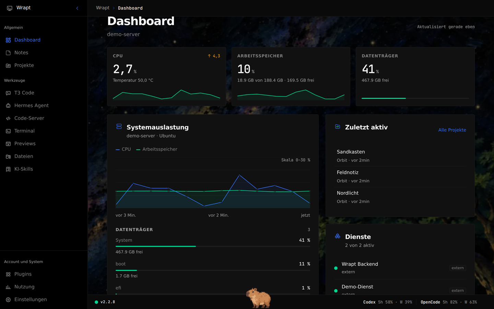
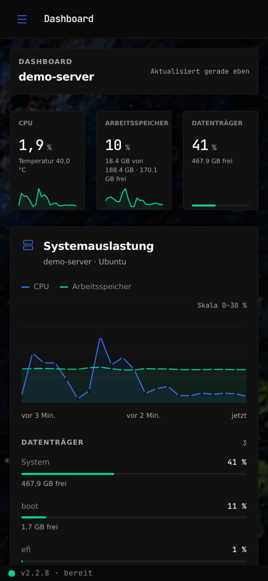
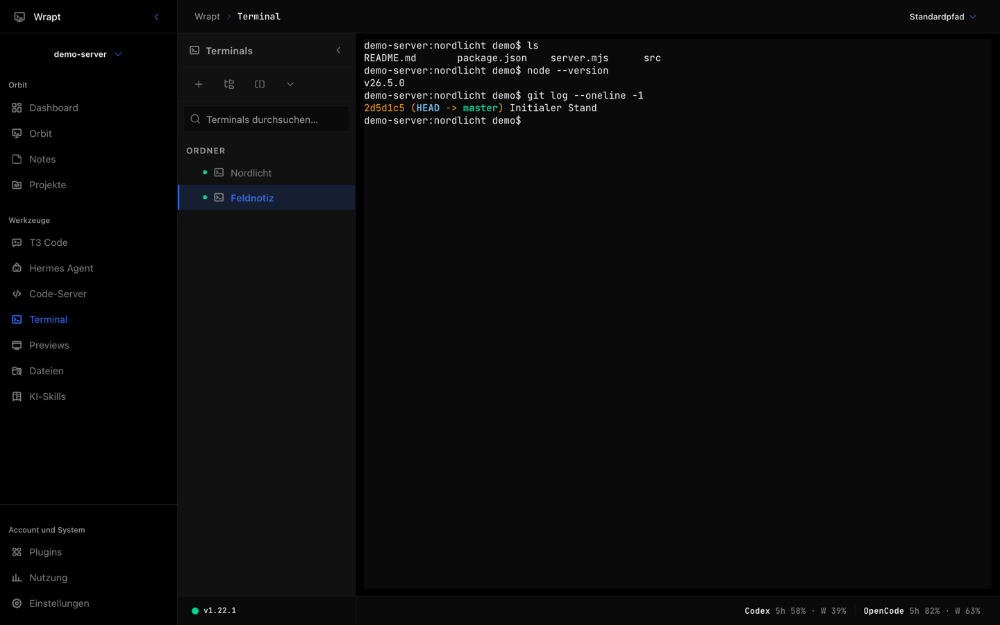
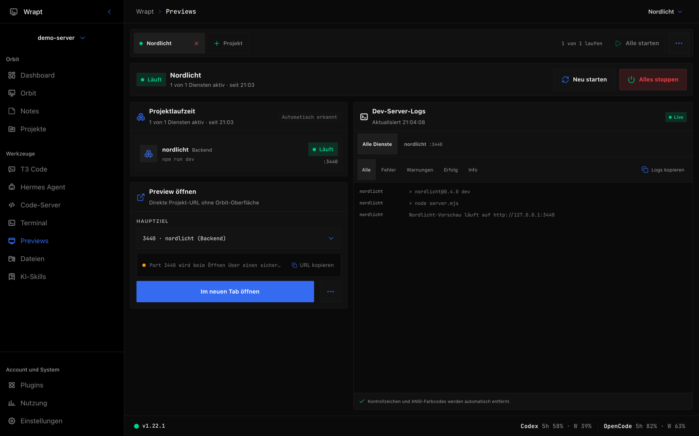
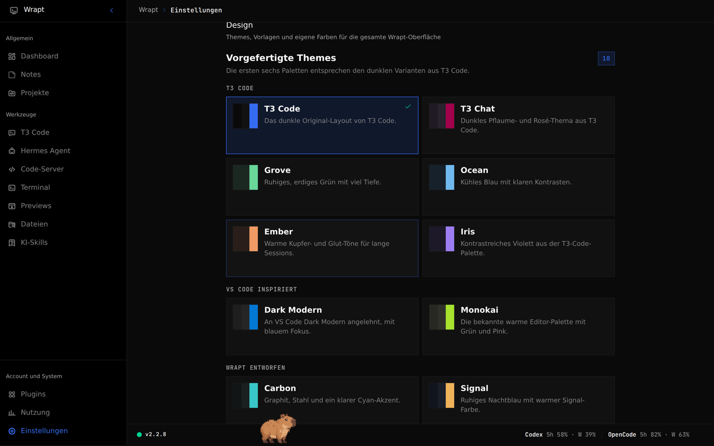
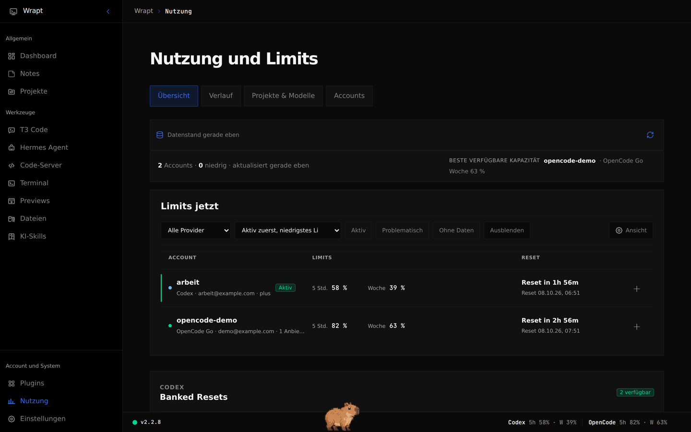
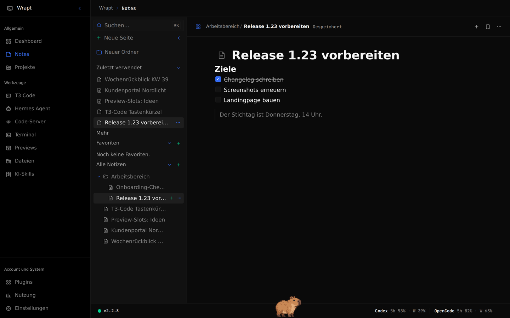
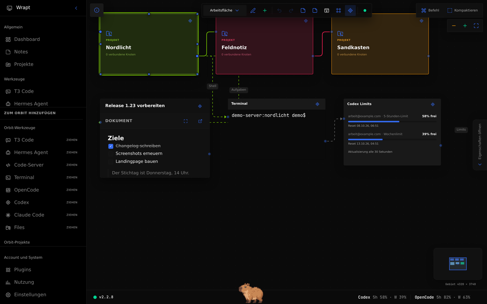
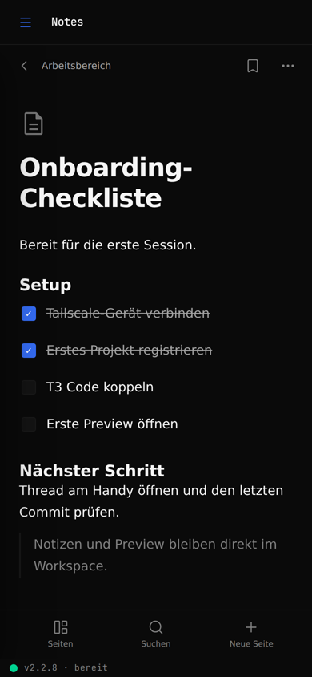
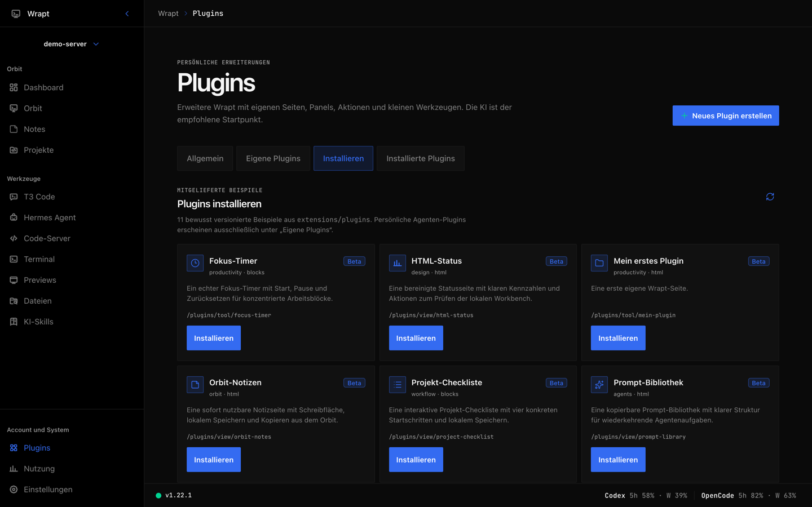

Self-hosted. Open Source.
Dein Dev-Workspace.
Auf jedem Gerät.
Agenten, Terminals und Previews auf deinem Server. Starte am PC, prüfe den Stand am Handy und arbeite im selben Thread weiter.
T3 Code · Hermes · Terminal · Previews


PC und Handy greifen auf denselben Server zu. Projekte, Threads und der aktuelle Stand liegen dort, nicht auf einem einzelnen Gerät.
Entstehung
Angefangen hat es mit T3 Code. Ich habe darin gearbeitet und gemerkt, dass mir eine Umgebung fehlte, in der T3 Code, Hermes Agent und meine eigenen Werkzeuge zusammenlaufen, auf einem Server, der weiterläuft, wenn ich den Rechner zuklappe. Wrapt ist diese Umgebung. Sie läuft auf meinem eigenen Server und ist von mehreren Geräten aus erreichbar.
Werkzeuge
T3 Code, Hermes Agent und die Terminals liegen in derselben Oberfläche. Du öffnest einen Agent-Thread, schreibst eine Nachricht oder arbeitest direkt im Terminal, ohne zwischen Programmen zu wechseln. Was auf dem Server läuft, siehst du im Browser und greifst mit denselben Flächen darauf zu, egal an welchem Gerät du sitzt.

Previews und Server
Für Frontend-Arbeit startet Wrapt den Dev-Server und bindet die Vorschau in die Oberfläche ein. Du öffnest die laufende Seite im Panel oder kopierst die Adresse und lädst sie in einem eigenen Browser. Über Tailscale erreichst du Oberfläche und Vorschau auch von außerhalb deines Netzes. Das Dashboard zeigt dazu Ressourcen und aktive Prozesse des Servers.

Themes
Zehn vorgefertigte Themes stehen bereit: die dunklen T3-Code-Paletten, Dark Modern und Monokai sowie Carbon und Signal aus eigener Hand. Einzelne Farbrollen wie Akzent, Flächen und Text lassen sich unabhängig anpassen. Ich wähle das Theme in den Einstellungen und speichere es in der Projektkonfiguration.

Nutzung und Limits
Wrapt liest Limits, Verbrauch und Verlauf von Codex und OpenCode aus und wertet sie auf dem eigenen Server aus. Die Konten verwalte ich je Werkzeug, Limits und Reset-Zeitpunkte laufen über den lokalen CodexBar-Abruf zusammen. Der Verlauf zeigt Tokens nach Tag, Projekt und Modell.

Notizen
Notizen liegen in Ordnern, lassen sich durchsuchen und im Markdown-Editor schreiben. Der Editor kennt Blöcke wie Callouts und aufklappbare Toggles. Jede Notiz lässt sich als Knoten in Orbit verwenden.

Orbit
Orbit ist eine freie Arbeitsfläche: Projekte, Terminals, Agenten, Previews, Notizen und Nutzung liegen als Knoten darauf. Ich verbinde die Knoten zu einem Board und sehe so den Zusammenhang. Der Stand wird laufend in Revisionen gesichert.

Mobile Nutzung
Auf dem Handy nutzt du Wrapt als installierbare Web-App. Wenn ein Agent fertig ist, kommt ein Push-Hinweis. Du öffnest den Thread direkt und siehst den Stand, ohne den Rechner aufzuklappen.

Erweiterungen
Wrapt lässt sich um eigene Plugins ergänzen. Der Codex-Account-Switcher ist ein Beispiel: Er ergänzt die Oberfläche um eine Aktionsleiste zum Wechseln zwischen verwalteten Konten. Eigene Erweiterungen bringen neue Flächen und Werkzeuge mit, ohne den Kern zu verändern.

Dokumentation
Wrapt in Ruhe kennenlernen
Die Dokumentation erklärt, was Wrapt ist, wie die Werkzeuge zusammenspielen und wie du die eigene Instanz einrichtest und betreibst.
Open Source
Wrapt ist Open Source und steht unter der MIT-Lizenz. Der gesamte Quellcode liegt auf GitHub. Du kannst ihn forken, an deine Umgebung anpassen und eigene Änderungen als Pull Request beisteuern.